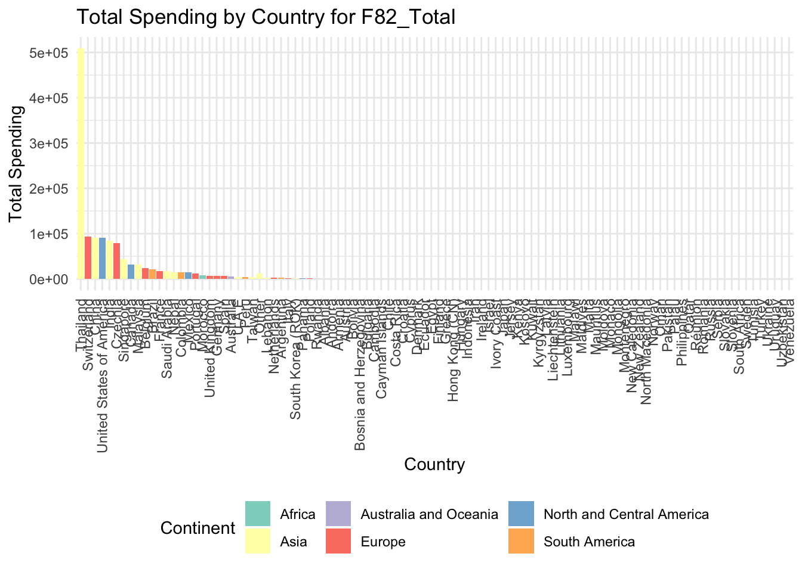
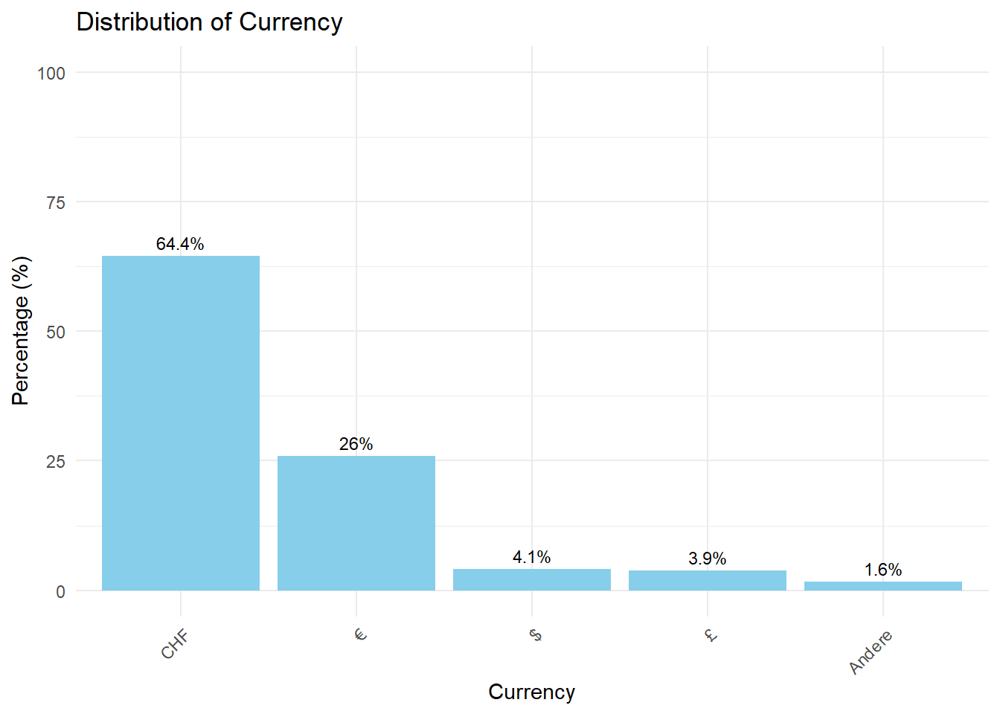
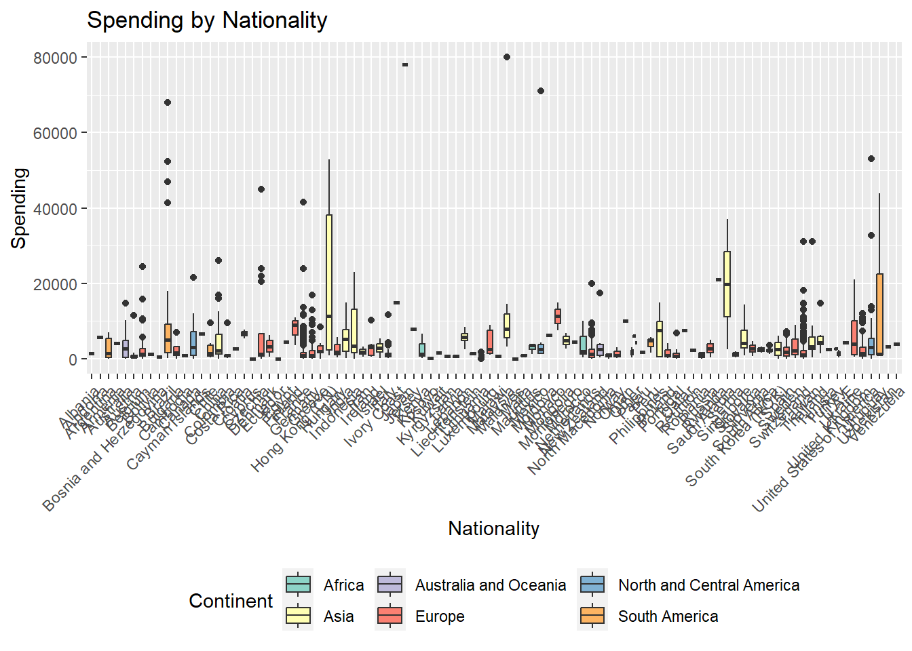
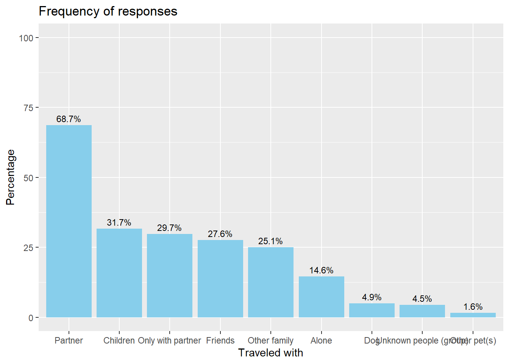
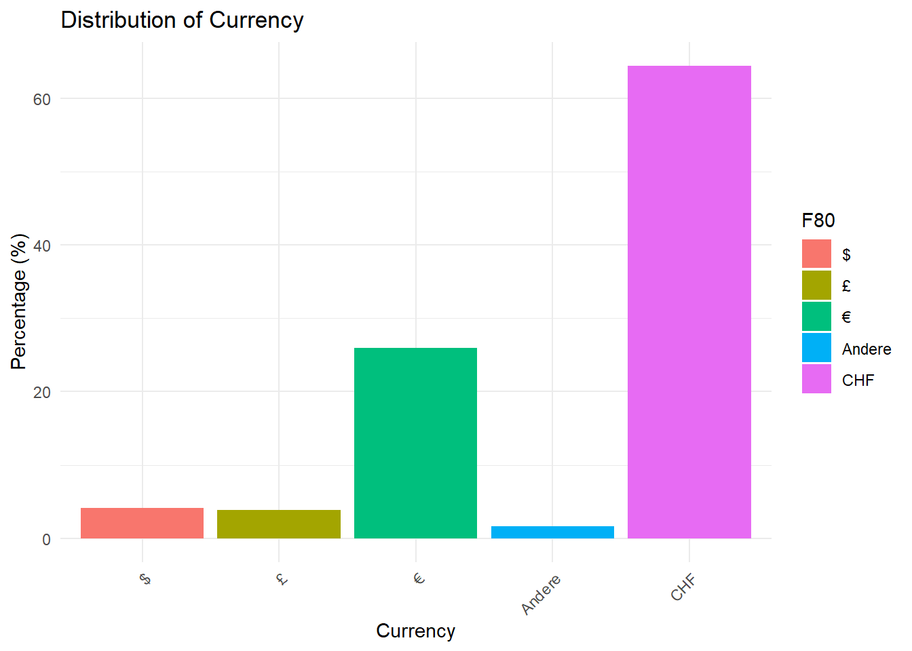
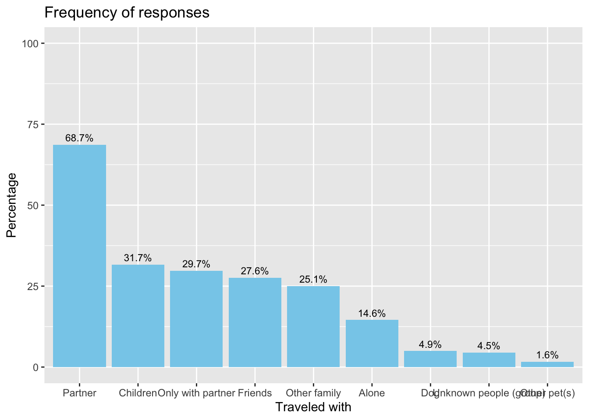

Code
source(here::here("scripts", "setup.R"))
data <- read.csv(here("data", "TMS_dataset_Vaud_20240314_FINAL.csv"),
sep = ",")Where are from the people coming in the canton of Vaud? What kind of trip are they doing?
source(here::here("scripts", "setup.R"))
data <- read.csv(here("data", "TMS_dataset_Vaud_20240314_FINAL.csv"),
sep = ",")Global percentage of people coming in the canton of Vaud per continent
### F05_01.ENG ###
#nb of occurrences by country and continents
OccurencesCountry <- data %>%
group_by(data$F05_02_ENG) %>%
count(sort = TRUE)
OccurencesContinent <- data %>%
group_by(data$F05_01_ENG) %>%
count(sort = TRUE)
#Continent in percentages
F05_01_PCT <- data %>%
group_by(F05_01_ENG) %>%
summarise(Count = n()) %>%
mutate(Percentage = Count / sum(Count) * 100) %>%
arrange(desc(Percentage)) %>%
mutate(Percentages = round(Percentage, 2)) %>%
select(-c(Percentage)) %>%
rename(Continent_of_origin = F05_01_ENG)
datatable(F05_01_PCT, options = list(pageLength = 10,
class = "hover",
searchHighlight = TRUE), rownames = FALSE)#plot numbers continent
ggplot(F05_01_PCT, aes(x=reorder(Continent_of_origin, Percentages), y=Percentages, fill=Continent_of_origin)) +
geom_bar(stat="identity") +
coord_flip() + # Flip coordinates for horizontal bars
theme_minimal() +
labs(x="Continents of origin", y="Percentages", title="Percentages of Each Unique Continent of origin") +
theme(legend.title = element_blank(), # Remove the legend title
legend.position = "none", # Hide the legend as the colors are not necessary with labels
plot.title = element_text(hjust = 0.5), # Center the plot title
axis.text.x = element_text(angle = 45, hjust = 1)) + # Rotate x-axis labels for readability
geom_text(aes(label=sprintf("%.2f%%", Percentages)), position=position_dodge(width=-0.5), vjust=-0.01) # Add percentage labelsWarning: `position_dodge()` requires non-overlapping x intervals
### F05_02_ENG ###
#plot with continents
F05_02_PCT <- data %>%
group_by(F05_02_ENG, F05_01_ENG) %>% # Group by both country and continent
summarise(Count = n(), .groups = 'drop') %>%
mutate(Percentage = round((Count / sum(Count) * 100),2)) %>%
arrange(desc(Percentage))
#concatenate all countries except " 7 best "
F05_02_PCT <- F05_02_PCT %>% add_row(F05_01_ENG = "Other Continents", F05_02_ENG = "Other Countries", Count = sum(F05_02_PCT$Count[7:104]), Percentage = sum(F05_02_PCT$Percentage[7:104]))
#get rid of the rest of the rows
F05_02_PCT <- F05_02_PCT[-(8:104),]
#plot
ggplot(F05_02_PCT, aes(x = reorder(`F05_02_ENG`, Percentage), y = Percentage, fill = `F05_01_ENG`)) +
geom_bar(stat = "identity") +
coord_flip() + # Make the plot horizontal
scale_fill_brewer(palette = "Set3", name = "Continent") + # Use a color palette for continents
theme_minimal() +
labs(x = "Country of Origin", y = "Percentages", title = "Percentage of Responses by Country and Continent of origin") +
theme(axis.text.x = element_text(angle = 45, hjust = 1, size = 9),
axis.text.y = element_text(angle = 45, hjust = 1, size = 9),
plot.title = element_text(hjust = 0.5),
legend.position = "right") + # Adjust legend position
geom_text(aes(label=sprintf("%.2f%%", Percentage)), position=position_stack(vjust=0.5))
Global percentage of people coming in canton of Vaud per country of origin
# Countries in percentages
F05_02_PCT <- data %>%
group_by(F05_02_ENG) %>%
summarise(Count = n()) %>%
mutate(Percentage = round((Count / sum(Count) * 100),2)) %>%
arrange(desc(Percentage)) %>%
rename(Country_of_origin = F05_02_ENG)
datatable(F05_02_PCT, options = list(pageLength = 10,
class = "hover",
searchHighlight = TRUE), rownames = FALSE)#add continent next to each country
#or merge continent and country table. 1st column continents, 2nd countries, # of occurences then percentagePer city, the percentage of each visitor’s country of origin, relative to the number of visitor of the city
# Counting the number of tourists by city and nationality
tourists_by_nationality <- data %>%
group_by(F105_Code, F05_02_ENG) %>%
summarise(Count = n(), .groups = 'drop')
# Calculating the total number of tourists per city
total_tourists_per_city <- tourists_by_nationality %>%
group_by(F105_Code) %>%
summarise(TotalCount = sum(Count), .groups = 'drop')
# Joining the counts back to the detailed breakdown and calculating the ratio
nationality_ratio_per_city <- tourists_by_nationality %>%
left_join(total_tourists_per_city, by = "F105_Code") %>%
mutate(Ratio = round((Count / TotalCount),2)) %>%
select(F105_Code, F05_02_ENG, Ratio) %>%
rename(City = F105_Code, Country_of_origin = F05_02_ENG)
datatable(nationality_ratio_per_city, options = list(pageLength = 10,
class = "hover",
searchHighlight = TRUE), rownames = FALSE)Ratio of each country of origin relatively to the number of tourist surveyed in each district
#ratio of each nationality relatively to the number of tourist surveyed in each district F105_OrgCode
tourists_by_nationality <- data %>%
group_by(F105_OrgCode, F05_02_ENG) %>%
summarise(Count = n(), .groups = 'drop')
# Calculating the total number of tourists per city
total_tourists_per_city <- tourists_by_nationality %>%
group_by(F105_OrgCode) %>%
summarise(TotalCount = sum(Count), .groups = 'drop')
# Joining the counts back to the detailed breakdown and calculating the ratio
nationality_ratio_per_city <- tourists_by_nationality %>%
left_join(total_tourists_per_city, by = "F105_OrgCode") %>%
mutate(Ratio = round((Count / TotalCount),3)) %>%
select(F105_OrgCode, F05_02_ENG, Ratio) %>%
rename(District_tourism = F105_OrgCode,Country_of_origin = F05_02_ENG)
datatable(nationality_ratio_per_city, options = list(pageLength = 10,
class = "hover",
searchHighlight = TRUE), rownames = FALSE)## Séparation cantons suisse-allemands
# # Swiss german column
#
# unique(data[data$F05_02 == "Schweiz", ]$F05_03)
#
# swiss_german_cantons = c("Luzern", "Schwyz", "Bern", "Neuenburg", "Aargau",
# "Zürich", "Basel-Stadt", "Basel-Landschaft", "Obwalden",
# "Appenzell Innerrhoden", "Schaffhausen", "Thurgau",
# "St. Gallen", "Solothurn", "Uri", "Zug", "Nidwalden",
# "Appenzell Ausserrhoden")
#
#
# # Binary column for swiss germans
# data$swiss_german <- ifelse(data$F05_02 == "Schweiz" & data$F05_03 %in% swiss_german_cantons, 1, 0)# stacked bar plot with cities on y and % on x and fill = % nationalities per city relatively to the number of tourist who visited the city
# Create the bar chart
# Create the bar chart
# ggplot(nationality_ratio_per_city, aes(x = Ratio, y = F105_Code)) +
# geom_bar(stat = "identity") +
# labs(x = "Percentage", y = "City", title = "Percentage of Tourists by City") +
# theme_minimal()## trying to add percentage country of origin visitors relatively to each district on leaflet
# # Assume 'F105_Code' is your city code and maps directly to 'leaflet_districts'
# # Add district info to nationality ratios
# nationality_with_districts <- nationality_ratio_per_city %>%
# left_join(data %>% select(F105_Code, leaflet_districts), by = "F105_Code")
#
# # Aggregate nationality data by district
# district_nationality_ratios <- nationality_with_districts %>%
# group_by(leaflet_districts, F05_02_ENG) %>%
# summarise(AverageRatio = mean(Ratio), .groups = 'drop') %>%
# mutate(Label = paste(F05_02_ENG, ":", round(AverageRatio * 100, 2), "%")) %>%
# group_by(leaflet_districts) %>%
# summarise(AllLabels = paste(Label, collapse = "\n"))
#
# # Join with geographic data
# vaud <- vaud %>%
# left_join(district_nationality_ratios, by = c("NAME" = "leaflet_districts"))
#
# # Assuming AverageRatio is correctly calculated and added
# palette <- colorNumeric(palette = "Blues", domain = range(vaud$AverageRatio, na.rm = TRUE))
#
# # Create a Leaflet map
# leaflet(vaud) %>%
# addTiles() %>%
# setView(lng = 6.63, lat = 46.51, zoom = 9) %>%
# addPolygons(
# fillOpacity = 0.75, color = ~palette(AverageRatio),
# weight = 1,
# popup = ~AllLabels
# )
#
#
#
#
# # If AverageRatio is not listed, ensure it is being calculated correctly
# district_nationality_ratios <- nationality_with_districts %>%
# group_by(leaflet_districts, F05_02_ENG) %>%
# summarise(AverageRatio = mean(Ratio, na.rm = TRUE), .groups = 'drop') %>%
# mutate(Label = paste(F05_02_ENG, ":", round(AverageRatio * 100, 2), "%")) %>%
# group_by(leaflet_districts) %>%
# summarise(AllLabels = paste(Label, collapse = "\n"))
#
# # Make sure that the column names used in the join are correct
# colnames(vaud)
# colnames(district_nationality_ratios)
#
# # Correct the join statement
# vaud <- vaud %>%
# left_join(district_nationality_ratios, by = c("NAME" = "leaflet_districts"))
#
# # Check for AverageRatio in vaud
# if("AverageRatio" %in% colnames(vaud)) {
# print("AverageRatio is present")
# } else {
# print("AverageRatio is missing")
# }
#
# # Adjust palette creation
# if("AverageRatio" %in% colnames(vaud)) {
# palette <- colorNumeric(palette = "Blues", domain = range(vaud$AverageRatio, na.rm = TRUE))
# } else {
# palette <- colorNumeric(palette = "Blues", domain = c(0, 1)) # Default or fallback range
# }
#
# # Create the Leaflet map
# leaflet(vaud) %>%
# addTiles() %>%
# setView(lng = 6.63, lat = 46.51, zoom = 9) %>%
# addPolygons(
# fillOpacity = 0.75, color = ~palette(AverageRatio),
# weight = 1,
# popup = ~AllLabels
# )
#
#
#
# # Example to combine columns if necessary (adjust as needed based on content)
# vaud$AllLabels <- apply(vaud[, grep("AllLabels", colnames(vaud))], 1, function(x) paste(na.omit(x), collapse = " "))
#
# # Drop the old AllLabels.x.x columns
# vaud <- vaud %>%
# select(-matches("AllLabels.[0-9]+"))
#
# # Check the new AllLabels column
# head(vaud$AllLabels)
#
# # Set up a simple color palette if no AverageRatio is available
# palette <- colorNumeric(palette = "Blues", domain = c(0, 1))
#
# # Create the Leaflet map using vaud2
# leaflet(vaud) %>%
# addTiles() %>%
# setView(lng = 6.63, lat = 46.51, zoom = 9) %>%
# addPolygons(
# fillOpacity = 0.75, color = ~palette(1), # Uniform color as no AverageRatio is available
# weight = 1,
# popup = ~AllLabels
# )
# ### F12 & F13 ###
#Are we more interested in knowing when they came for holidays or how long?
#duration per month
data <- data %>%
mutate(
# Convert to date format first
date_column = dmy(F12),
# If you want the month names instead
month_name_column = month(date_column, label = TRUE, abbr = FALSE) # Set abbr=FALSE for full month names
)
#order
desired_order <- c("Serial2",
"F05_01",
"F05_01_ENG",
"F05_02",
"F05_02_ENG",
"F05_03",
"F05_04",
"F12",
"F13",
"month_name_column",
"hFerienDauer")
remaining_columns <- setdiff(names(data), desired_order)
new_order <- c(desired_order, remaining_columns)
data <- data[, new_order]
# nb of days per month
nb_days_per_month <- data %>%
select(F12, F13, month_name_column, hFerienDauer) %>%
group_by(month_name_column) %>%
summarize(total_hFerienDauer = sum(hFerienDauer, na.rm = TRUE))
nb_days_per_month <- nb_days_per_month %>%
mutate(season = case_when(
month_name_column %in% c("December", "January", "February") ~ "Winter",
month_name_column %in% c("March", "April", "May") ~ "Spring",
month_name_column %in% c("June", "July", "August") ~ "Summer",
month_name_column %in% c("September", "October", "November") ~ "Fall",
TRUE ~ NA_character_ # for any month names not matched or NA values
))
#plot
ggplot(nb_days_per_month, aes(x = month_name_column, y = total_hFerienDauer, fill = season)) +
geom_bar(stat = "identity") +
geom_smooth(aes(group = 1), method = "loess", se = FALSE, color = "red", linetype = "dashed") +
scale_fill_manual(values = c("Winter" = "blue", "Spring" = "green", "Summer" = "purple", "Fall" = "orange")) +
theme_minimal() +
labs(x = "Months", y = "Sum Holiday Durations", title = "Total Holiday Duration by Month", fill = "Season") +
theme(axis.text.x = element_text(angle = 45, hjust = 1))
Now let’s explore the percentage of trip category per continent. The categories are the following :
### F16 ###
# do a tableau with the percentage of each trip option per nationality
trip_counts <- data %>%
group_by(F05_01_ENG, F05_02_ENG, F16_ENG) %>%
summarise(count = n()) %>%
ungroup()
# Calculate total counts per nationality
nationality_totals <- trip_counts %>%
group_by(F05_01_ENG) %>%
summarise(total_count = sum(count))
# Join the trip counts with the total counts per nationality
trip_percentages <- trip_counts %>%
left_join(nationality_totals, by = "F05_01_ENG") %>%
mutate(percentage = (count / total_count) * 100) %>%
select(-c(count, total_count))
trip_percentages <- trip_percentages %>%
select(-c(F05_02_ENG)) %>%
group_by(F05_01_ENG, F16_ENG) %>%
summarise(Percentages = sum(percentage, na.rm = TRUE)) %>%
ungroup() %>%
mutate(Percentages = round(Percentages, 1))
# datatable(trip_percentages, options = list(pageLength = 10,
# class = "hover",
# searchHighlight = TRUE), rownames = FALSE)
#plot
my_colors <- c("Holidays with only one overnight stay in Switzerland" = "#FF9999",
"Round trip only within Switzerland (several overnight locations in Switzerland)" = "#9999FF",
"Round trip through Europe: only one overnight stay in Switzerland" = "#66CC99",
"Round trip through Europe: several places to stay in Switzerland" = "#E69F00")
#filter by continent for pie plots
trip_percentages_Af <- trip_percentages %>% filter(F05_01_ENG == "Africa")
trip_percentages_As <- trip_percentages %>% filter(F05_01_ENG == "Asia")
trip_percentages_AO <- trip_percentages %>% filter(F05_01_ENG == "Australia and Oceania")
trip_percentages_Eu <- trip_percentages %>% filter(F05_01_ENG == "Europe")
trip_percentages_NCA <- trip_percentages %>% filter(F05_01_ENG == "North and Central America")
trip_percentages_SA <- trip_percentages %>% filter(F05_01_ENG == "South America")
# the pie chart
trip_percentages_Af <- trip_percentages_Af %>%
mutate(
cs = rev(cumsum(rev(Percentages))),
pos = Percentages/2 + lead(cs, 1),
pos = if_else(is.na(pos), Percentages/2, pos))
trip_percentages_As <- trip_percentages_As %>%
mutate(
cs = rev(cumsum(rev(Percentages))),
pos = Percentages/2 + lead(cs, 1),
pos = if_else(is.na(pos), Percentages/2, pos))
trip_percentages_AO <- trip_percentages_AO %>%
mutate(
cs = rev(cumsum(rev(Percentages))),
pos = Percentages/2 + lead(cs, 1),
pos = if_else(is.na(pos), Percentages/2, pos))
trip_percentages_Eu <- trip_percentages_Eu %>%
mutate(
cs = rev(cumsum(rev(Percentages))),
pos = Percentages/2 + lead(cs, 1),
pos = if_else(is.na(pos), Percentages/2, pos))
trip_percentages_NCA <- trip_percentages_NCA %>%
mutate(
cs = rev(cumsum(rev(Percentages))),
pos = Percentages/2 + lead(cs, 1),
pos = if_else(is.na(pos), Percentages/2, pos))
trip_percentages_SA <- trip_percentages_SA %>%
mutate(
cs = rev(cumsum(rev(Percentages))),
pos = Percentages/2 + lead(cs, 1),
pos = if_else(is.na(pos), Percentages/2, pos))
p1 <- ggplot(trip_percentages_Af, aes(x = "", y = Percentages, fill = fct_inorder(F16_ENG))) +
geom_bar(stat = "identity", width = 1) +
coord_polar(theta = "y", start = 0) +
theme_void() +
theme(legend.position = "None") +
scale_fill_manual(values = my_colors) + # Use your defined colors here
geom_label_repel(aes(y = pos, label = paste0(Percentages, "%")), size=6, show.legend = F, nudge_x = 1) +
guides(fill = guide_legend(title = "F16_ENG")) +
geom_text(aes(label = Percentages), position = position_stack(vjust = 0.5), size = 0) +
ggtitle("Africa") +
theme(plot.title = element_text(size = 24))
p2 <- ggplot(trip_percentages_As, aes(x = "", y = Percentages, fill = fct_inorder(F16_ENG))) +
geom_bar(stat = "identity", width = 1) +
coord_polar(theta = "y", start = 0) +
theme_void() +
theme(legend.position = "None") +
scale_fill_manual(values = my_colors) + # Use your defined colors here
geom_label_repel(aes(y = pos, label = paste0(Percentages, "%")), size=6, show.legend = F, nudge_x = 1) +
guides(fill = guide_legend(title = "F16_ENG")) +
geom_text(aes(label = Percentages), position = position_stack(vjust = 0.5), size = 0) +
ggtitle("Asia") +
theme(plot.title = element_text(size = 24))
p3 <- ggplot(trip_percentages_AO, aes(x = "", y = Percentages, fill = fct_inorder(F16_ENG))) +
geom_bar(stat = "identity", width = 1) +
coord_polar(theta = "y", start = 0) +
theme_void() +
theme(legend.position = "None") +
#plot.title = element_text(size = 5)) +
scale_fill_manual(values = my_colors) + # Use your defined colors here
geom_label_repel(aes(y = pos, label = paste0(Percentages, "%")), size=6, show.legend = F, nudge_x = 1) +
guides(fill = guide_legend(title = "F16_ENG")) +
geom_text(aes(label = Percentages), position = position_stack(vjust = 0.5), size = 0) +
ggtitle("Australia & Oceania") +
theme(plot.title = element_text(size = 24))
p4 <- ggplot(trip_percentages_Eu, aes(x = "", y = Percentages, fill = fct_inorder(F16_ENG))) +
geom_bar(stat = "identity", width = 1) +
coord_polar(theta = "y", start = 0) +
theme_void() +
theme(legend.position = "None") +
scale_fill_manual(values = my_colors) + # Use your defined colors here
geom_label_repel(aes(y = pos, label = paste0(Percentages, "%")), size=6, show.legend = F, nudge_x = 1) +
guides(fill = guide_legend(title = "F16_ENG")) +
geom_text(aes(label = Percentages), position = position_stack(vjust = 0.5), size = 0) +
ggtitle("Europe ") +
theme(plot.title = element_text(size = 24))
p5 <- ggplot(trip_percentages_NCA, aes(x = "", y = Percentages, fill = fct_inorder(F16_ENG))) +
geom_bar(stat = "identity", width = 1) +
coord_polar(theta = "y", start = 0) +
theme_void() +
theme(legend.position = "None") +
scale_fill_manual(values = my_colors) + # Use your defined colors here
geom_label_repel(aes(y = pos, label = paste0(Percentages, "%")), size=6, show.legend = F, nudge_x = 1) +
guides(fill = guide_legend(title = "F16_ENG")) +
geom_text(aes(label = Percentages), position = position_stack(vjust = 0.5), size = 0) +
ggtitle("North & Central America") +
theme(plot.title = element_text(size = 24))
p6 <- ggplot(trip_percentages_SA, aes(x = "", y = Percentages, fill = fct_inorder(F16_ENG))) +
geom_bar(stat = "identity", width = 1) +
coord_polar(theta = "y", start = 0) +
theme_void() +
#theme(legend.position = c(0.5, 0.2)) +
theme(legend.position = "None") +
scale_fill_manual(values = my_colors) + # Use your defined colors here
geom_label_repel(aes(y = pos, label = paste0(Percentages, "%")), size=6, show.legend = F, nudge_x = 1) +
guides(fill = guide_legend(title = "F16_ENG")) +
geom_text(aes(label = Percentages), position = position_stack(vjust = 0.5), size = 0) +
ggtitle("South America") +
theme(plot.title = element_text(size = 24))
#merge plots
library(cowplot)
combined <- plot_grid(p1, p2, p3, p4, p5, p6, align = c("v", "h"), cols = 2, rows = 3) # Horizontal alignment
# To align the plots without the legends showing on each, you can extract the legend
# from one plot and use it in the combined plot
legend <- get_legend(p6)
combined_plot_with_legend <- plot_grid(combined, legend, ncol = 1, nrow = 1)
combined_plot_with_legend
In general, we notice that most of the visitors coming from continent far away from Switzerland are coming in Switzerland for serveral nightstays during their trip in Europe. On another hand, living closer, are staying most of the time for one overnight stay in Switzerland. This is probably due to the large quantity of visitors surveyed coming from Switzerland but from other cantons or visitors coming from adjacent countries such as Germany in France, all these visitors accounting for a total of approx. 50% of the people surveyed.
Now let’s explore the percentage of trip category per continent. The categories are the following :
ggplot(trip_percentages, aes(x = F05_01_ENG, y = Percentages, fill = F16_ENG)) +
geom_bar(stat = "identity") +
labs(x = "Country", y = "Percentages", fill = "Type of Trip") +
ggtitle("Stacked Bar Plot of Type of Trip by Country") +
scale_fill_manual(values = my_colors) + # Use your defined colors here
geom_text(aes(label = Percentages), position = position_stack(vjust = 0.5), size = 6) +
theme_minimal() +
theme(axis.text.x = element_text(angle = 45, hjust = 1, size = 12),
axis.text.y = element_text(hjust = 1, size = 10),
legend.position = "None",
legend.text = element_text(size = 10),
legend.title = element_text(size = 0),
legend.box = "vertical")
Global frenquency of nightstays in the canton of Vaud
### F20 ###
# Careful here: some people have 0 nightstay and only passed by switzerland for a day.
# but answered the question 16, asking about the number of nights.
# also when f16 answered and F20 blanc ---> change NAs by 1
data_NAs <- data %>%
mutate(F20 = ifelse(is.na(F20), 1, F20))
F20_freq <- data_NAs %>%
group_by(F20) %>%
summarize(Count = n(), .groups = 'drop') %>%
arrange(desc(Count)) # Optional: arrange in descending order of frequency
ggplot(F20_freq, aes(x = F20, y = Count, fill = F20)) +
geom_bar(stat = "identity") +
theme_minimal() +
labs(x = "Number of nights", y = "Frequency", title = "Frequency of the number of nights in Vaud") +
theme(axis.text.x = element_text(angle = 45, hjust = 1), # Improve readability of x-axis labels
legend.title = element_blank()) # Hide the legend if not needed
As most of our data contained NAs because of the structure of the survey (according to the answer of the question F16, some people could not answer question F20, therefore their answer was reported as a NA). Thus, we have decided to count the NAs as 1 overnight stay, as it is not possible to know if they only stayed in Vaud for 1 day without staying overnight.
# frequency nightstays distribution per city
distr_nightstays_per_district <- data_NAs %>%
select(F105_OrgCode, F20) %>%
group_by(F105_OrgCode)
distr_nightstays_per_district$F20[is.na(distr_nightstays_per_district$F20)] <- 0
# Adjust the plot theme for better readability
my_theme <- theme_minimal() +
theme(
text = element_text(size = 12), # Adjust text size
panel.grid.major = element_blank(), # Remove major gridlines
panel.grid.minor = element_blank(), # Remove minor gridlines
panel.border = element_blank(), # Remove plot border
axis.line = element_line(color = "black"), # Add axis lines
legend.position = "bottom") # Move legend to bottom
# Plotting the density ridgeline plot
ggplot(distr_nightstays_per_district, aes(x = F20, y = F105_OrgCode, group = F105_OrgCode)) +
geom_density_ridges(fill = "#00AFBB", color = "white", alpha = 0.8) +
scale_x_continuous(labels = scales::comma) +
labs(
x = "Number of Nights", # Adjust x-axis label
y = "City", # Adjust y-axis label
title = "Density Plot of Night Stays per District", # Add plot title
subtitle = "Distribution of night stays across different Districts", # Add plot subtitle
caption = "Source: Your Dataset" # Add data source caption
)
### F21 ###
#consider NA as 0 here.
# if F20 and F21 not NAs --> take percentage of nightstays in Switzerland compared to the total length of the trip
# Add a new column with the percentage of night stays in Switzerland over the total trip night stays
data2 <- data %>%
mutate(Percentage_Night_Stays_Switzerland = ifelse(is.na(F20) | is.na(F21), NA, (F20 / F21) * 100))
ratio_nightstays_CH_EU <- data2 %>%
select(F20,F21, Percentage_Night_Stays_Switzerland) %>%
group_by() %>%
drop_na()
# Create the distribution histogram
ggplot(ratio_nightstays_CH_EU, aes(x = Percentage_Night_Stays_Switzerland)) +
geom_histogram(binwidth = 10, fill = "skyblue", color = "black") +
labs(
title = "Distribution of the percentage of nightstays in Switzerland over the whole trip",
x = "Percentage Night Stays",
y = "Frequency"
) +
theme_minimal()
As this graph shows, we notice that over the whole trip, most of the people will stay around 20% of their trip in Switzerland
### F30 ###
F30_Q <- data %>% count(F30_ENG, name = "Total")
F30_Q$percentage <- with(F30_Q, Total / sum(Total) * 100)
ggplot(F30_Q, aes(x = F30_ENG, y = Total, label = paste(percentage, "%"))) +
geom_bar(stat = "identity", fill = "skyblue") +
geom_text(vjust = -0.5, color = "black") +
theme_minimal() +
labs(title = "Q30: Have you booked a package tour?",
x = "Answers",
y = "Total")
### Deeper reasoning ###
# Where are coming from the people, per month
# Summarize data: count arrivals per month and country
monthly_arrivals <- data %>%
group_by(month_name_column, F05_02_ENG) %>%
summarise(Count = n(), .groups = 'drop') %>%
arrange(month_name_column, F05_02_ENG) # This will ensure the data is ordered, which might help in visualization
#concatenate all countries except " 7 best "
# # Define a vector of countries to exclude
# excluded_countries <- c("Switzerland", "United States of America
# ", "United Kingdom", "Spain", "France", "Germany", "Belgium")
#
# # Filter out the excluded countries and then summarise by month
# monthly_arrivals <- monthly_arrivals %>%
# filter(!F05_02_ENG %in% excluded_countries) %>% # Exclude the specified countries
# group_by(month_name_column) %>% # Group by month only
# summarise(Count = sum(Count), .groups = 'drop') # Sum the occurrences for remaining countries
#get rid of the rest of the rows
# Visualize
ggplot(monthly_arrivals, aes(x = month_name_column, y = `F05_02_ENG`, size = Count)) +
geom_point(alpha = 0.7) + # Using alpha for better visibility if points overlap
theme_minimal() +
labs(title = "Monthly Arrivals in Switzerland by Country of Origin",
x = "Month",
y = "Country of Origin",
size = "Number of Arrivals") +
theme(axis.text.x = element_text(angle = 45, hjust = 1))
Where did they stay? (For example: yes, they went to Montreux, but what type of accommodation, what price?
Let’s now dive into the subject of the location of their stay. First, let’s have a look at the most popular locations in the canton Vaud. Given the architecture of the study this gives us the city where most people answer the survey.
From this plot, we can see that the most pupular city in the canton of Vaud is Lausanne. Let’s now have a look at the type of accommodation where the visitor stayed in the canton of Vaud. We took the liberty to remove the 46 observation where the type of accommodation was not specified. We can now concentrate more our attention on the district where the people stayed.
As we can see, out of the 67 city surveyed in the 10 district, the most popular district is Lausanne. This is not really suprising because of the way the data was collected. More people were surveyed in these city/districts than other smaller one. It is still interesting to have a look to keep this in mind.
As we can see, the most popular type of accommodation in the canton of Vaud is Hotel/SPA House. It is interesting to note the proportion of people staying in Campsite. We can see below on the word cloud the most popular other type of accommodation.

Now, let’s have a look at the hotel standing of the places where the people stayed. This will highlight the quality of the stay per district.
As we can see on the graph above, the best average is optain in Ouest lausannois with an average of 4 stars. But this statistics is not very representative to the reality. Only 13 people answered the survey in this district which is not enough to have a good idea of the quality of the hotels in this district. The second best region after Ouest lausannois is Riviera-Pays-d’Enhaut with an average of 3.66 stars. This district got with 623 observation which is more representative. This high score for the Region of Riviera-Pays-d’Enhaut is not really surprising given the fact that this place is well know for its luxury hotels.
spending_data <- data.frame(
Spending_Type = c("Overnight stay", "Transports", "Food & Drink", "Souvenirs", "Other shopping", "Other expenses"),
Amount = c(mean(data$F81_01, na.rm = TRUE),
mean(data$F81_02, na.rm = TRUE),
mean(data$F81_03, na.rm = TRUE),
mean(data$F81_04, na.rm = TRUE),
mean(data$F81_05, na.rm = TRUE),
mean(data$F81_06, na.rm = TRUE))
)
ggplot(spending_data, aes(x = Spending_Type, y = Amount, fill = Spending_Type)) +
geom_bar(stat = "identity", color = "black") +
labs(title = "Average Spending by Category (no package tour)", x = "Category", y = "Average Amount") +
theme_minimal() +
theme(axis.text.x = element_text(angle = 45, hjust = 1)) # Rotate x-axis labels for readability
spending_data_package <- data.frame(
Spending_Type = c("Package", "Overnight stay", "Transports", "Food & Drink", "Souvenirs", "Other shopping", "Other expenses"),
Amount = c(mean(data$F82_01, na.rm = TRUE),
mean(data$F82_02, na.rm = TRUE),
mean(data$F82_03, na.rm = TRUE),
mean(data$F82_04, na.rm = TRUE),
mean(data$F82_05, na.rm = TRUE),
mean(data$F82_06, na.rm = TRUE),
mean(data$F82_07, na.rm = TRUE))
)
ggplot(spending_data_package, aes(x = Spending_Type, y = Amount, fill = Spending_Type)) +
geom_bar(stat = "identity", color = "black") +
labs(title = "Average Spending by Category", x = "Category", y = "Average Amount") +
theme_minimal() +
theme(axis.text.x = element_text(angle = 45, hjust = 1))
# Calculate the number of non-NA entries for each type of spending
spending_counts <- data %>%
summarize(
Package = sum(!is.na(F82_Total)),
WithoutPackage = sum(!is.na(F81_Total))
) %>%
gather(key = "PackageType", value = "Count")
# Calculate percentages
total_records <- sum(spending_counts$Count)
spending_counts <- spending_counts %>%
mutate(Percentage = (Count / total_records) * 100)
# Plot the percentages with the percentage shown on the bars
ggplot(spending_counts, aes(x = PackageType, y = Percentage, fill = PackageType)) +
geom_bar(stat = "identity") +
geom_text(aes(label = sprintf("%.1f%%", Percentage)), # Format the labels to one decimal place
position = position_stack(vjust = 0.5), # Adjust text to be inside the bars
color = "white") +
labs(title = "Percentage of Observations With and Without Package",
x = "Type of Spending",
y = "Percentage (%)") +
scale_fill_brewer(palette = "Pastel1") + # Aesthetically pleasing color palette
theme_minimal() +
theme(axis.text.x = element_text(angle = 45, hjust = 1))
# Aggregate total spending for F81_Total and include continents
total_spending_F81 <- data %>%
group_by(F05_02_ENG, F05_01_ENG) %>%
summarize(Total_Spending_F81 = sum(F81_Total, na.rm = TRUE)) %>%
arrange(desc(Total_Spending_F81))`summarise()` has grouped output by 'F05_02_ENG'. You can override using the
`.groups` argument.# Plot for F81_Total with continent colors
ggplot(total_spending_F81, aes(x = reorder(F05_02_ENG, -Total_Spending_F81), y = Total_Spending_F81, fill = F05_01_ENG)) +
geom_bar(stat = "identity") +
labs(title = "Total Spending by Country for F81_Total", x = "Country", y = "Total Spending") +
scale_fill_brewer(palette = "Set3", name = "Continent") + # Color based on continent
theme_minimal() +
theme(axis.text.x = element_text(angle = 90, vjust = 0.5, hjust=1),
legend.position = "bottom") # Position the legend at the bottom
# Aggregate total spending for F82_Total and include continents
total_spending_F82 <- data %>%
group_by(F05_02_ENG, F05_01_ENG) %>%
summarize(Total_Spending_F82 = sum(F82_Total, na.rm = TRUE)) %>%
arrange(desc(Total_Spending_F82))`summarise()` has grouped output by 'F05_02_ENG'. You can override using the
`.groups` argument.# Plot for F82_Total with continent colors
ggplot(total_spending_F82, aes(x = reorder(F05_02_ENG, -Total_Spending_F82), y = Total_Spending_F82, fill = F05_01_ENG)) +
geom_bar(stat = "identity") +
labs(title = "Total Spending by Country for F82_Total", x = "Country", y = "Total Spending") +
scale_fill_brewer(palette = "Set3", name = "Continent") + # Color based on continent
theme_minimal() +
theme(axis.text.x = element_text(angle = 90, vjust = 0.5, hjust=1),
legend.position = "bottom") # Position the legend at the bottom
# Reshape data from wide to long format
data_long <- data %>%
pivot_longer(
cols = F81_01:F81_06,
names_to = "Spending_Category",
values_to = "Amount"
)
# Calculate the average spending for each country and each category
average_spending <- data_long %>%
group_by(F05_02_ENG, F05_01_ENG) %>%
summarize(Average_Spending = mean(Amount, na.rm = TRUE)) %>%
ungroup() %>%
arrange(desc(Average_Spending))`summarise()` has grouped output by 'F05_02_ENG'. You can override using the
`.groups` argument.# Optional: Aggregate to country level without distinguishing by category
average_spending_by_country <- average_spending %>%
group_by(F05_02_ENG, F05_01_ENG) %>%
summarize(Average_Spending = mean(Average_Spending, na.rm = TRUE)) %>%
arrange(desc(Average_Spending))`summarise()` has grouped output by 'F05_02_ENG'. You can override using the
`.groups` argument.# Plot the average spending by country in descending order
ggplot(average_spending_by_country, aes(x = reorder(F05_02_ENG, -Average_Spending), y = Average_Spending, fill = F05_01_ENG)) +
geom_bar(stat = "identity") +
labs(title = "Average Spending by Country", x = "Country", y = "Average Spending") +
scale_fill_brewer(palette = "Set3", name = "Continent") + # Color based on continent
theme_minimal() +
theme(axis.text.x = element_text(angle = 90, vjust = 0.5, hjust=1),
legend.position = "bottom") # Position the legend at the bottomWarning: Removed 4 rows containing missing values (`position_stack()`).
# Reshape data from wide to long format for package spending variables
data_long_package <- data %>%
pivot_longer(
cols = F82_01:F82_07,
names_to = "Spending_Category",
values_to = "Amount"
)
# Calculate the average spending for each country and each category
average_spending_package <- data_long_package %>%
group_by(F05_02_ENG, F05_01_ENG) %>%
summarize(Average_Spending = mean(Amount, na.rm = TRUE)) %>%
ungroup() %>%
arrange(desc(Average_Spending))`summarise()` has grouped output by 'F05_02_ENG'. You can override using the
`.groups` argument.# Optional: Aggregate to country level without distinguishing by category
average_spending_by_country_package <- average_spending_package %>%
group_by(F05_02_ENG, F05_01_ENG) %>%
summarize(Average_Spending = mean(Average_Spending, na.rm = TRUE)) %>%
arrange(desc(Average_Spending))`summarise()` has grouped output by 'F05_02_ENG'. You can override using the
`.groups` argument.# Plot the average spending by country for package tours in descending order
ggplot(average_spending_by_country_package, aes(x = reorder(F05_02_ENG, -Average_Spending), y = Average_Spending, fill = F05_01_ENG)) +
geom_bar(stat = "identity") +
labs(title = "Average Spending on Package Tours by Country", x = "Country", y = "Average Spending") +
scale_fill_brewer(palette = "Set3", name = "Continent") + # Color based on continent
theme_minimal() +
theme(axis.text.x = element_text(angle = 90, vjust = 0.5, hjust=1),
legend.position = "bottom") # Position the legend at the bottomWarning: Removed 65 rows containing missing values (`position_stack()`).
Checking for outliers?
filtered_data <- data %>%
rename(Continent = F05_01_ENG) %>%
filter(F81_Total <= 100000)
ggplot(filtered_data, aes(x = F05_02_ENG, y = F81_Total, fill = Continent)) +
geom_boxplot() +
labs(title = "Spending by Nationality", x = "Nationality", y = "Spending") +
scale_fill_brewer(palette = "Set3") + # Adds a color palette for the continents
theme(axis.text.x = element_text(angle = 45, hjust = 1),
legend.position = "bottom")
# Prepare the data by adding a binary column for package and non-package tours
data <- data %>%
mutate(
With_Package = ifelse(!is.na(F82_Total), 1, 0), # 1 if there's a package, 0 otherwise
Without_Package = ifelse(!is.na(F81_Total), 1, 0) # 1 if there's no package, 0 otherwise
)
# Summarize data to count the number of package and non-package tours by continent
continent_summary <- data %>%
group_by(F05_01_ENG) %>%
summarize(
Total_Tours = n(), # Total number of tours
Package_Tours = sum(With_Package, na.rm = TRUE), # Total package tours
Non_Package_Tours = sum(Without_Package, na.rm = TRUE) # Total non-package tours
) %>%
mutate(
Package_Tour_Percentage = (Package_Tours / Total_Tours) * 100 # Calculate the percentage
) %>%
arrange(desc(Package_Tour_Percentage)) # Arrange continents in descending order of package tour percentage
# Plot the percentage of package tours by continent in descending order
p <- ggplot(continent_summary, aes(x = reorder(F05_01_ENG, -Package_Tour_Percentage), y = Package_Tour_Percentage, fill = F05_01_ENG)) +
geom_bar(stat = "identity") +
geom_text(aes(label = sprintf("%.1f%%", Package_Tour_Percentage)), # Adding percentage labels
position = position_stack(vjust = 0.5), color = "black", size = 3.5) +
labs(title = "Percentage of Package Tours by Continent",
x = "Continent",
y = "Percentage of Package Tours (%)") +
scale_fill_brewer(palette = "Set3") +
theme_minimal() +
theme(axis.text.x = element_text(angle = 45, hjust = 1),
legend.position = "none") # Removing the legend for clarity
# Display the plot
print(p)
# Calculate the frequency and percentage of each currency value
currency_data <- data %>%
count(F80) %>%
mutate(Percentage = n / sum(n) * 100)
# Create a bar chart
ggplot(currency_data, aes(x = F80, y = Percentage, fill = F80)) +
geom_bar(stat = "identity") +
labs(title = "Distribution of Currency", x = "Currency", y = "Percentage (%)") +
theme_minimal() +
theme(axis.text.x = element_text(angle = 45, hjust = 1)) # Adjust text angle for better readability
ggplot(df_sums_df, aes(x = Column, y = Percentage)) +
geom_bar(stat = "identity", fill = "skyblue") +
geom_text(aes(label = paste0(round(Percentage, 1), "%")), vjust = -0.5, size = 3, color = "black") +
labs(title = "Frequency of responses", x = "Traveled with", y = "Percentage") +
ylim(0, 100)
We notice that more than 2/3 of overall visitors came to Vaud with their partner (68.7%). Of these, 43% came only with their partner, without friends, children or other family.